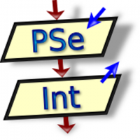

Conoce las tecnologías utilizadas de:

Donde cada experiencia se vuelve un momento unico.
Donde cada experiencia se vuelve un momento unico.
HTML5 fue utilizado para crear la estructura de la página web, organizando el contenido mediante títulos, párrafos, imágenes, enlaces, formularios y secciones.

CSS fue utilizado para poder diseñar y personalizarla apariencia de la pagina web. permitio modificar los colores, tamaños, menu de navegación y los elementos visuales.

Fue la herramienta que se utilizo para desarrollar la pagina web, nos permitio escribir, organizar y modificar los codigos de los lenguajes utilizados
Esta herramienta fue utilizado como sistema de gestion de base de datos para almacenar y administrar la información. Permitió organizar los datos de forma segura y eficiente mediante tablas relacionadas entre sí.

Fue utilizado para diseñar y analizar algoritmos mediante un pseudocódigo, facilitó la comprensión de la lógica de programación antes de implementar las soluciones.